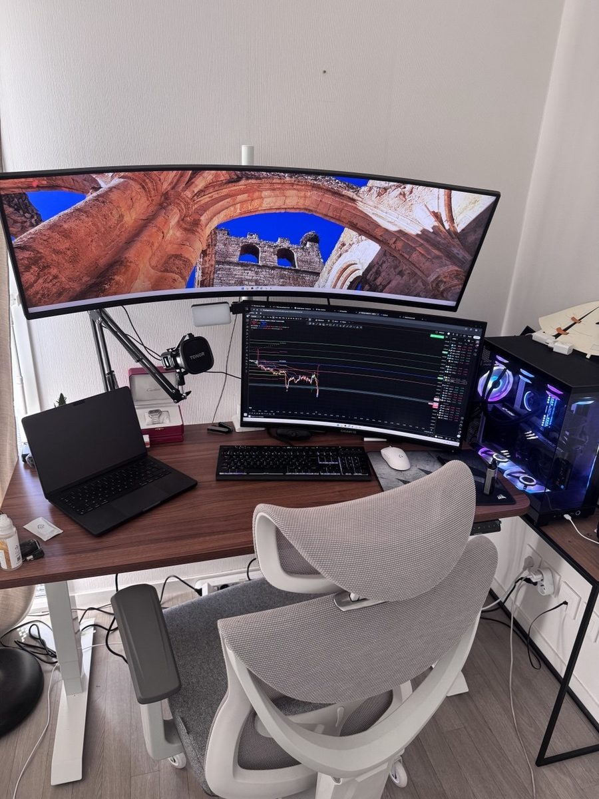
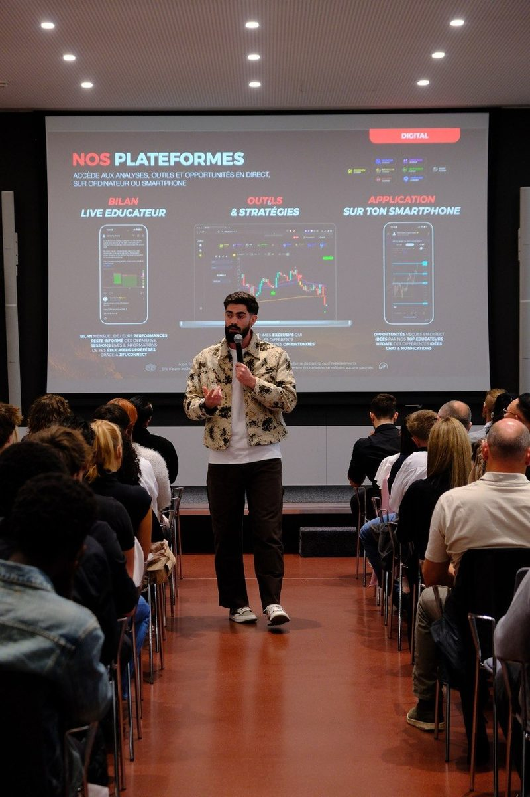
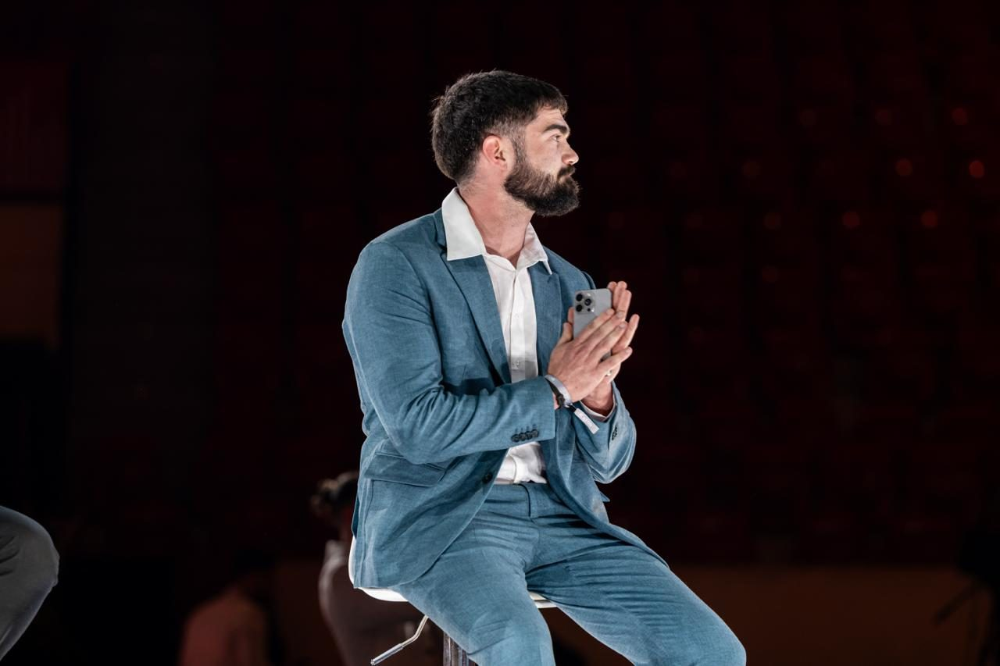

Investisseur · Créateur · Mentor
Investir, créer et scaler —
avec méthode.
Je suis Bastian Tallec. J'aide les particuliers et les entreprises à prendre de meilleures décisions : sur les marchés, dans leur contenu et dans leur business.

Mon parcours
D'où je suis parti
Je n'ai pas commencé avec un gros capital ni un réseau. J'ai appris les marchés à la dure, fait mes erreurs, et construit une méthode qui m'a permis de vivre de l'investissement et d'en faire mon métier.
Aujourd'hui, je transmets ce que j'aurais aimé qu'on m'explique au début : une approche structurée, honnête et accessible. Mon objectif est simple — aider un maximum de personnes à reprendre la main sur leur argent, leur contenu et leur business.
Échanger avec moi
Court · moyen · long terme
Investissement
J'accompagne particuliers et investisseurs à bâtir une stratégie claire sur les marchés — du trading court terme à l'investissement patrimonial long terme. Pas de promesses : des analyses, de la gestion du risque et de la discipline. Selon ton profil et tes objectifs, on construit une approche sur mesure et un plan d'action concret.
- Analyses de marché et plans de trade
- Gestion du risque et money management
- Stratégies court / moyen / long terme
- Suivi et accompagnement personnalisé
Partager · vulgariser · inspirer
Création de contenu
Je crée du contenu pour rendre l'investissement accessible et démystifier les marchés — sur scène comme en ligne. Vidéos, lives, formats courts : l'objectif est de transmettre une information claire et actionnable à une communauté qui veut apprendre et progresser.
- Contenus pédagogiques sur l'investissement
- Prises de parole et conférences
- Formats courts et lives
- Une communauté engagée

Coaching & mentorat
Accompagnement personnalisé
Au-delà des marchés, j'accompagne en individuel et en groupe celles et ceux qui veulent passer un cap. Coaching, mentorat et formation : on travaille ta stratégie, ta discipline et ton état d'esprit pour des résultats durables — pas juste un coup de chance.
- Sessions de coaching individuelles
- Mentorat et suivi dans la durée
- Formations et ateliers en groupe
- Objectifs clairs, plan d'action mesurable

Scaler intelligemment
Consulting business
J'aide entrepreneurs et entreprises à scaler leur activité de manière saine : structurer l'offre, optimiser l'acquisition et prendre les bonnes décisions financières. Une approche pragmatique, orientée résultats, adaptée à ton stade de croissance.
- Stratégie de croissance et positionnement
- Acquisition et monétisation
- Structuration et décisions financières
- Accompagnement opérationnel
« La liberté, ce n'est pas une question de chance.Construire la tienne
C'est une question de décisions. »
Contact
Travaillons ensemble
Un projet d'investissement, de contenu ou de croissance ? Dis-moi où tu en es — je te réponds personnellement.